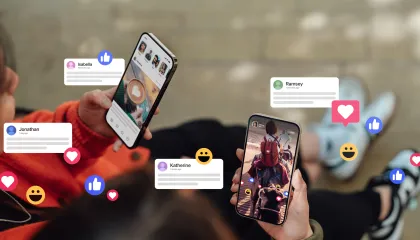

A Agência DAN tem se consolidado como uma das principais agências de gestão de talentos digitais no Brasil, com influenciadores de diferentes nichos, como games, maquiagem, lifestyle e entretenimento. Cada um desses criadores é referência em sua área e tem conquistado uma audiência fiel, sempre com o suporte da agência para expandir sua presença digital e fortalecer sua marca pessoal. A seguir, destacamos cinco influenciadores reais que são grandes nomes no Brasil, com grande impacto em suas respectivas áreas de atuação.
Felipe Neto é um dos influenciadores mais conhecidos do Brasil, famoso por suas análises sobre temas polêmicos e de grande relevância, como política, cultura pop e comportamento. Ele cria conteúdo crítico e reflexivo sobre a sociedade, frequentemente comentando acontecimentos políticos e sociais. Além disso, Felipe também se envolve em debates sobre questões de direitos humanos, educação e sustentabilidade, utilizando sua plataforma para gerar discussões profundas e promover a reflexão entre seus seguidores. Seu conteúdo vai além do entretenimento, sendo uma verdadeira ferramenta de conscientização.
Mari Maria é uma das principais influenciadoras brasileiras no ramo da maquiagem. Ela é conhecida por seus tutoriais de maquiagem e resenhas detalhadas sobre produtos de beleza, sempre compartilhando técnicas de aplicação e truques para transformar looks diários ou para ocasiões especiais. Além de seus vídeos sobre maquiagem, Mari também posta conteúdo sobre cuidados com a pele, dicas de autoestima e como usar a beleza como uma forma de expressão pessoal. Sua abordagem acessível e descontraída a tornou uma referência para muitas pessoas que buscam aprender mais sobre o universo da beleza.
Lucas Olioti é um dos influenciadores mais respeitados no Brasil quando o assunto é jogos e tecnologia. Seu conteúdo é voltado para gameplays, análises de jogos e dicas sobre o universo dos e-sports. Ele também se dedica a compartilhar novidades tecnológicas, realizando comparações entre dispositivos e dando recomendações para seus seguidores sobre o melhor hardware para jogar e como melhorar a performance em jogos. Lucas combina entretenimento com informação, sempre trazendo as últimas tendências do mundo dos games e da tecnologia de forma didática e envolvente.
Buzeira é conhecido por criar conteúdos de entretenimento e estilo de vida que envolvem humor e situações cotidianas. Ele compartilha histórias engraçadas, desafios e dicas relacionadas ao seu dia a dia de forma irreverente e autêntica. Além disso, Buzeira compartilha com seu público momentos pessoais, interage com seus seguidores e oferece uma visão divertida sobre temas como relacionamentos, amizade e experiências da vida adulta. Seu conteúdo é focado em criar uma conexão genuína com o público, proporcionando risadas e identificação com a vida real.
Bianca Andrade, também conhecida como Boca Rosa, é uma influenciadora de beleza e lifestyle, famosa por seus vídeos de maquiagem, cuidados com a pele e dicas de empoderamento feminino. Além de ensinar truques de beleza e resenhas de produtos, Bianca compartilha momentos do seu cotidiano, viagens, e vlogs sobre sua rotina pessoal e profissional. Ela também usa suas plataformas para falar sobre autoestima, saúde mental e como superar desafios pessoais, se tornando uma inspiração para suas seguidoras. Bianca é um exemplo de como o conteúdo digital pode ser usado para promover